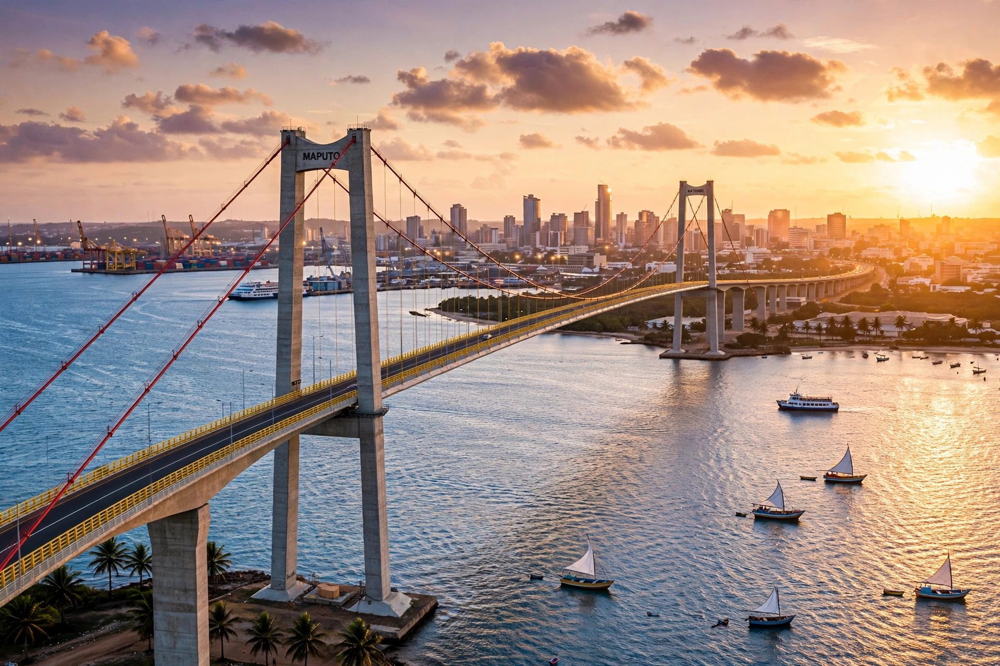

[Image placeholder: The Maputo–Katembe bridge over Maputo Bay]| Country | Mozambique |
|---|---|
| Former name | Lourenço Marques (until 1976) |
| Population | About 1.1 million (city); metro over 3 million |
| Port | One of southern Africa's major deep-water ports |
**Maputo** is the capital and largest city of Mozambique, on an inlet of the Indian Ocean in the far south of the country, close to South Africa and Eswatini. Founded as the Portuguese port of Lourenço Marques in the late eighteenth century, it became the capital of Portuguese Mozambique and, after independence in 1975, was renamed for the Maputo River.
Maputo is one of Africa's most attractive capitals: wide jacaranda- and acacia-lined avenues (the Baixa), the Eiffel-designed central railway station (CFM, among the world's most beautiful), the iron house attributed to Eiffel's workshop, and the Maputo–Katembe bridge (2018), Africa's longest suspension bridge, spanning the bay. The port handles much of South Africa's Gauteng trade, and the civil-war years (1977–92) left the city swollen with displaced people and scarred infrastructure that has since been extensively rebuilt.
Maputo is famed across the region for its seafood — LM prawns in piri-piri — its marrabenta music, the colonial-era Polana Hotel, and the FEIMA crafts market. Across the bay, Inhaca Island and the Ponta do Ouro beaches are weekend escapes.